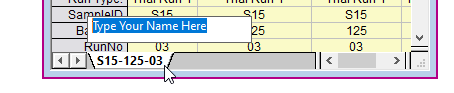
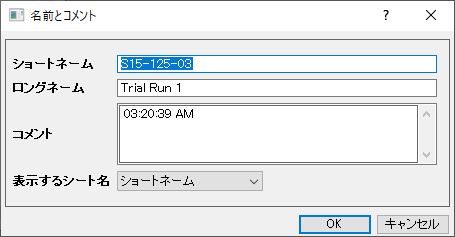
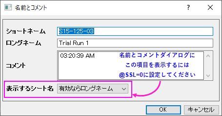
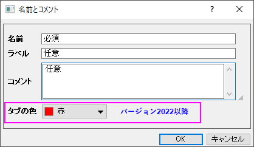

FAQ-348 ワークシートで名前とコメントを追加または編集するにはどうすればよいですか?
add-worksheet-comment-name
最終更新日：2021/11/10
素早い編集（全バージョン）
シートタブ上でダブルクリックして、新しい名前を入力することで表示シート名を素早く編集できます。
- 
以下では、シートの命名オプションの管理方法をバージョンごとに説明しています。
Originのバージョンが2019b以前の場合
- シートタブ上で右クリックし、名前とコメントを選択します。
- ショートネームと任意のロングネームとコメントを入力、編集できます。
- 表示するシート名をドロップダウンリストでタブ上に表示する名前を設定できます。デフォルトではショートネームが表示されます。
- 
- 変更後、OKをクリックして、ダイアログを閉じます。ワークシートタブにマウスカーソルをあわせると、ショートネーム、ロングネーム、コメントが表示されます。
- タブ上で表示する名前は、タブ上で右クリックして表示するシート名ドロップダウンリストで、ショートネームまたはロングネームに変更できます。
Origin 2020
- シートタブ上で右クリックし、名前とコメントを選択します。
- ショートネームと任意のロングネームとコメントを入力、編集できます。
- シート名は、デフォルトでショートネームが表示されます。シートタブでロングネームを表示したい場合、システム変数@SSLの値を変更します。例えば、以前のバージョンで保存したプロジェクトで、ショートネームとロングネームの表示が混在していた場合は、
@SSL=0に設定します。
- 
- また、
@SSL=0 に変更すると、ワークシートタブを右クリックして、表示するシート名を設定できるようになります。
Originのバージョンが2020b以降の場合
- 
- シートタブ上で右クリックし、名前とコメントを選択します。
- 名前と任意のラベルとコメントを入力、編集できます。
- シートタブには、デフォルトで名前が表示されます。シートタブでラベルを表示したい場合、システム変数@SSLの値を変更します。例えば、全シートタブでラベルを表示したい場合は、
@SSL=1または@SSL=3に設定します。設定後、変更を反映されていない場合は、タブを右クリックして名前とコメントダイアログを開き、OKボタンを押すと更新されます。また、プロジェクトでシート名とラベルを混在させる機能を復元する方法については、上記のOrigin
2020に関する注記を参照してください。
キーワードワークシート,
コメント, ショートネーム, ロングネーム, ラベル, シート名